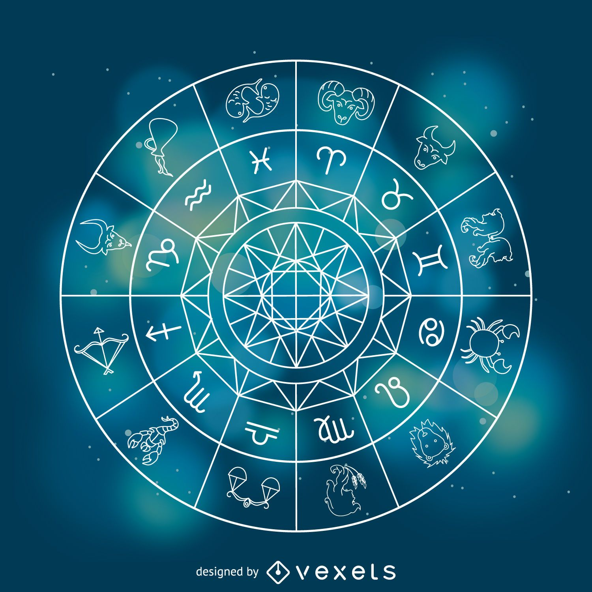

El horoscopo
dia de nacimiento
1
2
3
4
5
6
7
8
9
10
12
13
14
15
16
17
18
19
20
21
22
23
24
25
26
27
28
29
30
31
Mes nacimiento
enero
febrero
marzo
abril
mayo
junio
julio
agosto
septiembre
octubre
nobiembre
diciembre
consultar horoscopos
